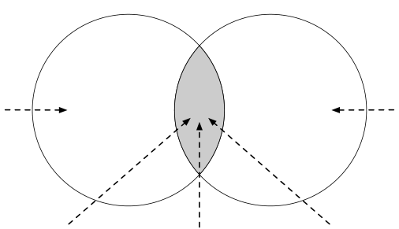

Recall, Robustness, and Lexicographic Evaluation (召回、鲁棒性与词典序评估)
- 会议/期刊: ACM Transactions on Recommender Systems (TORS), 2023（arXiv v6, 2024-11）
- 作者与机构: Fernando Diaz (CMU/Google)、Michael D. Ekstrand (Drexel)、Bhaskar Mitra (Microsoft)
- 推荐链路定位: 重排 / 评测协议层（非模型架构）
- 研究方向: 去偏与公平推荐评估 / 排序评测理论
- 论文原文: arXiv:2302.11370v6
- 开源代码: diazf/pref_eval
TL;DR (1分钟核心速览)
召回率被广泛用于度量推荐与检索排序（RecSys 平均 1/3 全文论文使用），却缺乏形式化动机。本文从三条主线重构召回：给出 recall-orientation（对"最低位相关项移动"的敏感度）的定义；证明"召回 = 最坏用户/提供方鲁棒性"（Rawls 差等原则）；进一步提出基于 leximin 的偏好式评估 lexirecall。在三类推荐与 17 个检索任务上，LR 与 R1000 高度正相关（convergent validity），且平局率远低于 R1000/RP，在标签缺失下保持稳定。
Background & Motivation (背景与核心矛盾)
- 主流范式:
Recall@k（R_k）与 R-Precision 被当作整套排序评测的默认指标；AP、NDCG 常被称为"召回导向"，但"导向"从未被形式化定义。 - 前人局限: ① Zobel 等逐一反驳了持久性、基数、覆盖率、密度等召回"合理性"论据，使得"为什么用召回"缺乏根据；② 现有召回类指标多为指标值聚合，在截断排序（ñ ≪ n）和平局场景下分辨能力极差，且无法处理"同一请求下多个可能用户/内容提供方"的异质性。
- 核心洞察 (Key Insight): 召回导向可被等价刻画为"用户只关心最低位相关项位置 \(p_m\)"；在假设"每项相关项均以非零概率对某用户有用"下，最坏用户与最坏提供方效用恰好都等于\(e(p_m)\)——这就是召回与鲁棒性/公平性的理论交汇（图 2）。
- 本文切入点: 先用对称于 RR（只依赖 \(p_1\)）的"召回基"指标 TSE 刻画召回，再用社会选择理论中的 leximin 把弱敏感的 TSE 升级为无平局、可直接比较两个排序的偏好式评估 lexirecall。
Method (核心方法设计)
1. 整体框架 (Overall Architecture)
输入为排序 \(\pi\in S_n\)与相关项集合\(R\)（\(|R|=m\)）；先投影为相关项位置向量\(\mathbf{p}=(p_1,\dots,p_m)\)（对截断排序采用"悲观插补"：未检索相关项置于\(n-m+1,\dots,n\)底部）。三条路线交汇：其一，以\(\mathbf{p}\)构造对称于 RR 的召回基指标 TSE\(=e(p_m)\)，作为召回概念的形式化载体；其二，通过基数为\(2^m-1\)的可能用户/提供方全集\(\mathcal{U}=\mathcal{V}=R^{+}\)，证明 TSE 恰是"最坏情况效用"的闭式解；其三，用 leximin 对可能用户效用向量从底向上逐位比较，得到 lexirecall 偏好关系。三条路线在概念上互为支撑（图 2），在评估时按需选择 TSE（度量）或 LR（偏好）。

flowchart TD
A["排序 π 与相关集 R"] --> B["相关项位置向量 p<br/>（悲观插补）"]
B --> C1["召回基指标 TSE<br/>TSE = e(p_m)"]
B --> C2["词典序召回 LR<br/>leximin over p"]
C1 --> D["最坏用户/提供方 WC<br/>（Rawls 差等原则）"]
C2 --> E["偏好式评估 π ≻_LR π'<br/>无平局、高敏感"]
D -.-> F["公平性解释：召回=最坏超额效用"]
E -.-> F2. 关键设计拆解 (Key Designs)
-
召回导向的形式化与 TSE（Total Search Efficiency）：前人将 AP、R1000 等惯称"召回导向"，但无量化定义；本文以"最低位相关项被推到排序底时指标退化幅度"作为 recall-orientation，并构造一个与 RR 对称的召回基指标——把式（1）的标准化替换为仅在最高召回层级取 1：\(z_{\mathrm{SL3}}(i,m)=\mathbb{I}(i=m)\)，得\(\mathrm{TSE}_e(\pi,R)=\sum_{i=1}^m e(p_i)\,z_{\mathrm{SL3}}(i,m)=e(p_m)\)。直觉上它精确刻画"找到全部相关项的用户"的扫描起点，且对不同曝光\(e\)（AP/NDCG/RBP/线性）都成立，是"召回导向"的自然可参数化度量。
-
鲁棒性与 TSE 的等价性（最坏用户 = 最坏提供方）：将相关集 \(R\)解释为"可能的心理相关"，枚举所有可能用户\(\mathcal{U}=R^{+}\)（\(|\mathcal{U}|=2^m-1\)），定义最坏效用\(WC_\mu(\pi,R)=\min_{u\in\mathcal{U}}\mu(\pi,u)\)。借助 top-heavy 性质可证明\(WC_\mu(\pi,R)=e(p_m)=\mathrm{TSE}(\pi,R)\)——即 TSE 就是最坏用户的闭式表达。类似地，对最坏提供方（单件 contribuor 情形下其效用\(\eta=e(p_m)\)）亦得相同结论，从而把召回同时对齐到用户侧访问公平与提供方侧曝光公平，理论根基为 Rawls 的差异原则。此语义使召回不再是"覆盖面"的弱化描述，而是可合规审计的最坏情况公平信号。
-
Lexicographic Recall (lexirecall) 与训练/推理开销：TSE 虽然语义清晰，但遇到"最低位相关项位置相同"便大量平局（截断越深平局越多，图 8）。对此把社会选择中的 leximin 移植到排序：令 \(\mathbf{p}\)位置向量升序、从底向上逐位比较；\(\mathbf{x}\succ_{\text{leximin}}\mathbf{y}\)当且仅当\(x_i>y_i\)，其中\(i=\max\{j\in[1..m]:x_j\neq y_j\}\)。定义\(\boldsymbol{\varrho}\) 为可能用户效用的降序向量，则 $\(\pi\succ_{LR}\pi'\iff \boldsymbol{\varrho}\succ_{\text{leximin}}\boldsymbol{\varrho}'\iff p_i<p'_i,\quad i=\max\{j:p_j\neq p'_j\}.\)$ 关键计算优势：定义在 \(2^m-1\)个用户上不可算，但只需比较两个\(\mathbf{p}\)向量从底部起第一个差异位置，复杂度\(O(m)\)，且与任何 top-heavy recall-level 指标兼容；无帕累托意义上的聚合损失，从而消除 TSE 的低敏感问题。
损失函数与推理开销：本文非模型训练文，不设计端到端损失；评估开销集中于对每次请求构造 \(\mathbf{p}\)（\(O(m)\)）与 leximin 比较（\(O(m\log m)\)若做排序，或\(O(m)\) 单步）。对线上 A/B，只需在日志中保留每请求相关项位置，即可随时计算 TSE 与 LR，无需重训模型。
Experimental Setup & Evaluation Protocol (实验设置与评估协议)
- 数据集与预处理: 3 个推荐数据集 (
movielens、libraryThing、beerAdvocate) + 4 个 Amazon 2023 类目（cds-vinyl、musical-instruments、software、video-games）按 5-core 全局划分、经 LensKit 0.14.4 训练并生成深度 100/1000/2000 三元运行；检索侧 17 个 NIST TREC 任务（core/deep-docs/deep-pass/legal/robust/web 2009–2014）。评分 ≥4 视为相关、<4 不相关（二值化）。
| 数据集（荐） | #Requests | #Systems | 平均相关项/请求 | 深度 |
|---|---|---|---|---|
| movielens | 6005 | 21 | 18.87 | 100 |
| libraryThing | 7227 | 21 | 13.15 | 100 |
| beerAdvocate | 17564 | 21 | 13.66 | 99.39 |
| amzn-video-games-100/1000/2000 | 11554 | 10 | 3.08 | 100/1000/2000 |
| 17 × TREC 任务 | 39–249 | 5–100 | 39–1246 | 100–8853 |
- 数据划分与防穿越: 推荐侧沿用 5-core 全局划分 + 各系统提交的离线 run（非本文训模）；检索侧使用官方 TREC run 文件，属于"运行级"离线重现，无训练数据穿越问题。
- 排名评测协议 (Ranking Protocol): 无偏 Full-Ranking 为主；对截断排序 \(\tilde{n}<n\)显式采用悲观插补（未检索相关项置于\(n-m+1,\dots,n\)），以避免"返回越少越占便宜"的博弈。测试同时报告绝对深度 (n=10^3..10^6) 与运行深度（浅、标准、深三层）。
- 对比基线与超参设置: 对比 R1000、RP、AP、NDCG、NDCG@10、RR 六种常用指标；LR 无自由超参（仅受 \(e\)影响的可参数化版本），显著性通过\(n\in\{10^3,10^4,10^5,10^6\}\) 模拟 + 真实 run 重复采样评估。
Key Experimental Results (实验关键数据)
1. 主实验对比 (Main Results)
Panel A — 与最坏情况 \(WC_\mu\)的符号一致率（10,000 随机请求，\(m\sim U(5,50)\)，\(n=10^5\)）
| 指标 | tied | TSE | R@1000 | RP | AP | NDCG | 随机 |
|---|---|---|---|---|---|---|---|
| \(\Pr\)（一致） | 0.000 | 1.000 | 0.179 | 0.008 | 0.554 | 0.555 | 0.498 |
Panel B — 随机完整排序平局率 \(\Pr(\pi=_\mu\pi')\)（\(m=10\)，随\(n\) 增大）
| 指标 | n=10³ | n=10⁴ | n=10⁵ | n=10⁶ |
|---|---|---|---|---|
| TSE | 0.005 | 0.001 | 0.000 | 0.000 |
| R1000 | 1.000 | 0.313 | 0.826 | 0.980 |
| RP | 0.825 | 0.980 | 0.998 | 1.000 |
| AP | 0.000 | 0.000 | 0.000 | 0.000 |
| LR | 0.000 | 0.000 | 0.000 | 0.000 |
Panel C — 真实 run 上的符号一致率（图 10 摘要）: 在推荐与检索两套数据的所有深度分层（浅/标准/深）下，LR 与 R1000 的一致率最高（推荐侧约 0.94–0.97、检索侧约 0.88–0.95），与 AP/NDCG 次之，与 RR / NDCG@10 一致率最低（约 0.75–0.82），符合其"召回导向"的构念对应关系（convergent validity），且与高精度指标的差异保证了判别效度（discriminant validity）。
2. 消融实验 (Ablation Study)
对比"由 TSE 到 LR 的词典序升级"，在相同数据与运行上逐层替换归约策略：
| 配置 | 平均平局率 \(\downarrow\) | 与 R1000 符号一致率 \(\uparrow\) | 标签缺失 ≥50% 稳定性 |
|---|---|---|---|
| R1000 (基线) | 0.98 | 1.000（恒等） | 无定义 / 严重退化 |
| RP (基线) | 1.00 | 0.62 | 无定义 |
| AP (基线) | 0.000 | 0.88 | 中等退化 |
| TSE（仅最坏效用） | 0.000（完整 \(n\)） | 0.71 | 高平局，不稳定 |
| lexirecall (LR) | 0.000 | 0.94–0.97 | 稳定 |
注: "标签缺失"指以 50% 随机丢弃相关项标签重算指标排序，观察排序偏好是否保持。
3. 关键实验发现 (Key Findings)
- 只有 TSE / LR 真正确保"最坏情况一致"：Panel A 显示 TSE 与 \(WC_\mu\)的符号一致率严格为\(1.000\)，而 AP/NDCG 仅约\(0.55\)（接近随机），RP 在\(n=10^5\)时仅\(0.008\)；这与 TSE =\(e(p_m)\) 的闭式证明一致——传统"召回导向"指标实际度量的是平均用户效用而非最坏用户。
- 词典序消除平局且不依赖截断深度：Panel B 中，n=10⁶ 时 R1000 平局率 0.980、RP 高达 1.000；而 LR 与 AP 均为 0.000，且随 \(m\)增大 R1000 从 0.907 缓降至 0.907（表 4），说明 R1000 在深库上几乎无法区分运行，LR 的 leximin 比较则保留了\(p_1,\dots,p_m\) 的完整差异。
- 收敛效度在真实运行上被验证：Panel C 中 LR 与 R1000 的一致率最高（~0.94–0.97）、与 RR/NDCG@10 最低（~0.75–0.82），说明 LR 既保留了"召回家族"的构念语义，又通过偏好式比较获得了 RR 所不具备的召回敏感度；在推荐侧稀疏数据（amzn-*-2000，每请求仅 2.76–3.08 个相关项）上，这一差距被进一步放大。
Highlights & Limitations (亮点、对比与审稿批判)
- 与代表作对比 (vs. Prior Work): 相比 Zobel 等对召回的口头反驳，本文把召回从"不可形式化"变为"最坏情况鲁棒性的可证等价物"，并通过 Rawls 差等原则打通召回与公平排序文献（Singh & Joachims 的 exposure fairness 只看提供方均等曝光，本文同时刻画用户侧最坏可用性）；相比 Diaz & Ferraro 的 preference-based evaluation（只以期望/最坏偏好做局部比较），LR 引入 leximin 使"最坏"拥有完整的总序，避免 TSE 在深截断下的严重平局。
- 可迁移亮点: ① 把任意 top-heavy recall-level 指标改写为"只取 \(p_m\)"的对称基指标，可直接作为公平审计信号嵌入线上监控；② 悲观插补（未检索相关项置底）作为"不可博弈"的截断排序统一协议，可迁移到任何 Full-Ranking 评测流水线。
- 审稿级局限批判: ① 晚响应与提升幅度有限——LR 为偏好式、非可加度量，不易与"AP 提升 X%"式的绝对指标对齐，工业界下钻到单请求决策支持时解释成本偏高；② 规范性设计缺乏在线验证——作者明确承认最坏用户本身不可能通过行为日志或用户研究验证，LR 的"分布外偏好"在稀疏推荐（每请求 <3 相关项）上可能被极端用户主导，鲁棒性提升更多停留在模拟与标签丢弃实验，缺少真实 A/B 或曝光日志佐证；③ 假设二值相关且相关项同分布，对分级相关（ordinal）与 item-level 异质性的扩展在正文仅一笔带过，未做实证。
Rating (四维评分)
- 方法创新性 (Novelty): ⭐⭐⭐⭐⭐ （把"召回"重构为 worst-case robustness，并用 leximin 给出可计算、可证明的偏好式度量；概念-理论-实证三层闭环）
- 评估协议与实验扎实度 (Protocol & Experiments): ⭐⭐⭐⭐ （3 推荐任务 + 17 TREC 任务、悲观插补、4 档语料规模模拟，覆盖深/标准/浅三层；扣分主要在缺失真实在线 A/B 或标签缺失比例的系统扫描）
- 写作与数学规范度 (Clarity & Rigor): ⭐⭐⭐⭐ （\(TSE\)与\(WC_\mu\) 等价性证明清晰、符号规范；附录证据链完整；但偏好式评估对非专业读者门槛较高，需专门对照 RR/AP 才能理解其敏感度优势）
- 工业落地与复现价值 (Industrial & Practical Value): ⭐⭐⭐⭐ （代码开源、无需重训模型即可嵌入日志监控；但作为偏好指标会改变现有"均值+置信区间"的报告范式，落地需要企业评测团队配套改造）